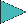
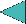

Playback Controls
The controls at the bottom of the window allow you to pause, rewind, and restart the animations in progress.
Most animations, be default, will run just a step at a time, pausing frequently so that you can view the data and compare to the code being executed, until you decide to tell the animation to move forward one step. The designer of each particular animation will set a number of breakpoints that he/she considers to be the “natural” or most instructive places to pause.
is the pause button. Click this during a running animation to pause at the next breakpoint . If you have previously run through a function with the run without pausing button (below), then clicking this button will restore the normal “pause at each breakpoint” behavior for the next function that you select from the Algorithms menu.
is the step button. Clicking this when an animation is paused will move allow the algorithm to resume running but will pause at the next breakpoint.
 is the play without pausing button. Clicking this when an animation is paused will move allow the algorithm to resume running and it will continue to run, past any future breakpoints, until either the selection function is completed or until you click on the pause button.
 is the rewind button. Clicking this when an animation is paused will rewind the animation to the most recent breakpoint. Pressing it repeatedly will move you further backwards in time. Use the step or play without pausing buttons to resume moving forwards again. (Note: if you rewind past a point at which the algorithm asked you to supply input, you will not be asked for that input again. The same input values will be used.)